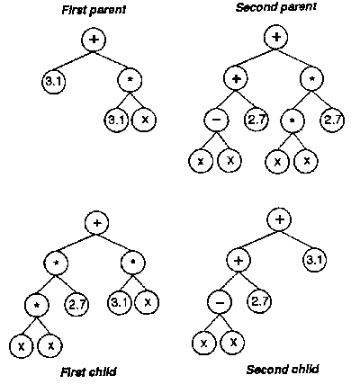
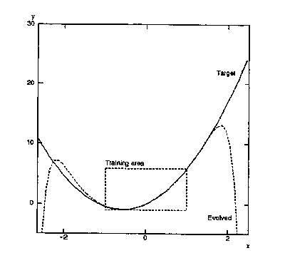

In: Brook & Arvanitis, eds., 1993 The Sixth White House Papers: Graduate Research
in the Cognitive & Computing Sciences at Sussex. University of Sussex, School of
Cognitive & Computing Sciences, Brighton, UK Research Paper CSRP 300.
Richard Dallaway
richardd@cogs.susx.ac.uk
School of Cognitive & Computing Sciences
University of Sussex
Brighton
BN1 9QH
Abstract Genetic programming (GP) is a general purpose method for evolving symbolic computer programs (e.g. Lisp code). Concepts from genetic algorithms are used to evolve a population of initially random programs so that they are able to solve the problem at hand. This paper describes genetic programming and discuss the usefulness of the method for building cognitive models. Although it appears that an arbitrary fit to the training examples will be evolved, it is shown that GP can be constrained to produce small, general programs.
As an example of GP, consider the problem of symbolic regression: given a set of data points, find the underlying function in symbolic terms. More specifically, suppose a learner is given 20 (x, y) pairs from the function y = 2.719x2 + 3.14161x, randomly selected from the interval x = [-1, +1]. The learner should return the symbolic expression 2.719x2 + 3.14161x. A program fragment that implements this function is:
2.719 * x * x + 3.1416 * x
In Lisp it would be written as:
(+ (* 2.719 (* x x)) (* 3.1416 x))
The Lisp version has the property that the function can easily be visualized as a tree (see the lower left-hand tree in figure 1, the "first child"). Most languages can or do represent programs in a structure similar to a tree at some stage (e.g., to ensure correct operator precedence). The power of GP comes from the way it manipulates tree structures: the crossover function takes two parent trees, and exchanges subtrees to create two children (see figure 1).
|  |
GP evolves tree structures defned over a set of functions and terminals, which must be supplied by the modeller. For the y = 2.719x2 + 3.14161x task, the function set will be:
F = (+, -, DIV, *)
The function DIV works just like division, except it arbitrarily returns 1.0 when there is an attempt to divide by zero. All the functions used by GP must have this property of "closure": that is, the functions must be able to produce sensible results over all the inputs they could possibly receive. This ensures that programs, even randomly generated programs, can be executed without error. As symbolic regression works with real numbers, it is likely that DIV will receive zero as a second argument. Note that if crossover is limited to subtrees of the same type, then there is no need for closure (Montana 1993). However, strongly typed GP is not used here.
The terminals set for the experiment will be:
T=(x, R)
The special symbol R generates a random floating point number between -1 and +1 when it is inserted into the initial population. That is, the initial population is created by randomly selecting a function. For each of the arguments to the function, either a terminal or another function is created. If the terminal is R, then a random number is inserted into the tree. This process continues until a maximum pre-specified depth is reached (17 in these simulations), or all the slots of the functions have been filled. The terminal x is set when testing a tree on a particular value of x.
For this task the fitness of a program is the sum of the differences between the actual values of y and the predicted values for the 20 values of x. The smaller the fitness, the better. Hence the aim is to evolve a program with a fitness of zero (perfect fit to the 20 data points), or one with an acceptably low fitness. Trees are selected for crossover on the basis of their fitnesses. The trees that are most fit have a greater chance of being selected for crossover.
Having defined the terminal set, function set, and fitness measure, the whole process becomes:
One possible problem is that GP may evolve an arbitrary program to fit the data implied by the fitness function. This was the case for the example of discovering y = 2.719x2 + 3.14161x. Although the programs that GP produced had very low fitness scores, they also contained over 500 symbols and generalized poorly. Remember that the fitness measure was only defined over values of x between ±1. When tested on other values (e.g., x = -5) the programs predicted value for y was nowhere near the actual value of y. See figure 2 for an example.
|  |
Koza (1992, chapter 18) suggests a number of secondary factors to penalize an individual for excessive size or time. So in addition to evolving correct solutions it is possible to evolve solutions that are efficient and parsimonious (the smallest structure possible to solve the problem). The symbolic regression problem, and the concept of a parsimony measure were both introduced by Koza (1992). Here I show, by simulation, that a parsimony term can increase the generalization capabilities of the programs produced by GP.
For the problem of inducing y = 2.719x2 + 3.14161x from 20 random points, two experiments were performed. In the first, 10 simulations were run (different 20 (x, y) pairs, different initial population) with the normal fitness function as described above. The second experiment was the same as the first, except that the fitness function included a term to limit the length of the resulting program. Specifically, the fitness function was the sum of the errors plus 1/300th the length of the program. So as the program included more and more symbols, the fitness score increased (remember that the smaller the fitness, the better the program).
| Fitness | Length | Crossovers | Test x = -5 | |
|---|---|---|---|---|
| With parsimony | 0.25 (0.09) | 35.6 (3.77) | 10600 (1034.94) | 1.075 (0.76) |
| Without | 0.18 (0.07) | 579 (103.92) | 13200 (800) | 15412900(15174500) |
The results (table 1) show much better generalization, and much smaller (but not minimal) programs when a parsimony measure is used. A typical best-of-run individual from the parsimony experiment is:
(+ (* (+ (+ x x ) (* (- 0.089180 -0.268689) (- (+ x x) -0.397293))) x) (+ x (+ x x)))
This program contains 21 symbols, has a fitness of 0.083, and was arrived at after 24,000 crossovers. As the expression is small, it is possible to simplify it, automatically, to: 2.715738x2 + 3.142178849x. This kind of expression was found on 8 out of the 10 runs. The other 2 expressions involved third and fourth powers, but were both parabolas.
In contrast, the runs without a parsimony measure produced programs with good fitness scores, but they contained over 500 symbols, and showed poor generalization. Only 3 of the 10 runs were even parabolas. For example, the evolved function shown in figure 2 contained 294 symbols, and could be simplified to:
2.607285632x2 + 0.1363108980x4 - 0.01133044530x7 - 0.006133984185x8+ 0.00007232668424x9 - 0.0003337912349x12 - 0.00005271529387x15 - 0.00002148197702x14- 0.001120258988x11 - 0.00007223488799x10 + 0.0008986832733x3 + 0.006378820199x6 + 0.0001780514783x13 - 0.00001461361073x16 + 0.005889481765x5 + 3.127084x
Note that this function contains 2.607285632x2 and 3.127084x, which are close to the terms in the target function. The other coeefficients of the evolved function are small, but on test cases, as x grows larger, they begin to dominate and distort the function.
Of course the function underlying a sample of points may be more complex than the simplest function that fits the sample. As noted above, the desire for parsimonious solutions is just a human preference; ignoring a complex but "True" description of a function is not a problem with GP, but a problem with our intuitions.
GP is not restricted to quantitative models. Any form of computational model can be evolved, providing the modeller can invent a fitness measure for the problem. Also, it may turn out that the parsimony measure is not useful for some problems. In this case, what would be needed is a method to increasing the generalization powers of programs evolved with GP.
This GP approach has a number of problems. For many interesting cognitive models, it will no doubt take a great deal of effort to determine the terminals, functions and fitness measure. It will take a large amount of CPU time to evolve a model, and then more time to analyse the resulting programs--although analysing connectionist models is also difficult (see McCloskey 1991). There is also the question of how well GP scales-up to larger problems; this will probably require a method for automatically building subprocedures (Angeline & Pollack 1992). Finally, nobody knows why GP works: there is no schema theorem for programs represented as trees, although this area is under development (Harvey 1992; Jones 1993). Harvey comments that a schema for Koza's variable-length trees will only be achieved if some restrictions are placed on the trees. He suggests, as one possibility, that a schema could be defined as a subtree occurring in programs of a limited size. Crossover will then need to preserve approximate tree sizes, which at present it does not. Nevertheless, Koza has empirically shown that GP does work in many domains, and it may be a useful tool for the cognitive scientist.
Harvey, I. (1992). Species adaptation genetic algorithms: a basis for a continuing SAGA. In Varela, F J. & Bourgine, P. (Eds.), Towards A Practice of Autonomous Systems: Proceedings of the First European Conference on Artificial life, pp. 346-354. MIT Press, Cambridge, MA.
Holland, J. H. (1975). Adaptation in Natural and Artificial Systems: An Introductionary Analysis with Applications to Biology, Control and Artificial Intelligence. University of Michigan Press.
Jones, A. J. (1993). A schemata theorem for trees. Manuscript accepted for The Fifth International Conference on Generic Algorithms.
Kinnear, Jr., K. E. (1993). Generality and difficulty in genetic programming: evolving a sort. To appear in The Fifth International Conference on Genetic Algorithms.
Koza, J. R. (1992). Genetic Programming: On the Programming of Computers by Natural Selection. MIT Press, Cambridge, MA.
McCloskey, M. (1991). Networks and theories: the place of connectionism in cognitive science, Psychological Science, 2(6), 387-395.
Montana, D. J. (1993). Strongly typed genetic programming. Technical report 7866, Bolt, Bernek and Newman Inc., Cambridge, MA.